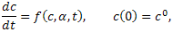
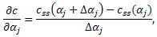

Sensitivity Analysis
The method calculates sensitivities associated with the steady state of the purely temporal system

where c is the n-vector of species concentrations, α is the m-vector
of systems parameters (which can include the initial conditions c0),
and t (time) is the variable of integration.
The local unscaled sensitivities ∂c/∂αj are calculated via finite difference approximations

where css(αj) and
css(αj+Δαj)
correspond to the solutions of the algebraic systems f(c, αj) = 0
and f(c, αj+Δαj) = 0 respectively.
The scaled sensitivities is calculated by multiplying each component ∂ck/∂αj
of the vector ∂c/∂αj
by the normalization factor αj/ckss(αj).
References
- H Rabitz, M Kramer, D Dacol,
"Sensitivity analysis in chemical kinetics".
Annu. Rev. of Phys. Chem., 34:419-461.